AI Engineering Course
Module 1
Machine Learning Foundations
Personal offline study copy. Content © Outcome School / Amit Shekhar. Not for redistribution. See study/NOTICE.md.
Contents
- Module 1: Machine Learning Foundations
- 1.1 What is Machine Learning?
- 1.2 Supervised vs Unsupervised Learning
- 1.3 Linear Regression vs Logistic Regression
- 1.4 What is Feature Engineering in Machine Learning?
- 1.5 Precision vs Recall
- 1.6 What Are L1 and L2 Loss Functions?
- 1.7 What is Regularization in Machine Learning? L1 vs L2 Explained
- 1.8 What is Reinforcement Learning?
- 1.9 What is Contrastive Learning? How It Works Step by Step
Module 1
Machine Learning Foundations
In this module, we will learn what Machine Learning is, the different ways a machine can learn, and the basic terms we will keep using in every later module of this AI Engineering Course.
By the end of this module, we will know how a model learns from data, how we measure it, and how we stop it from overfitting.
Lesson 1.1
What is Machine Learning?
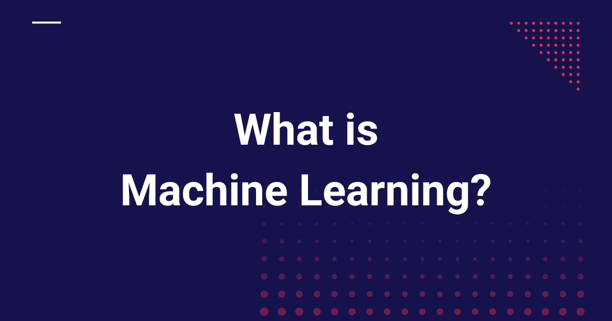
Machine Learning is a field of computer science that gives computers the ability to learn from data without being explicitly programmed.
Yet another article on - Introduction To Machine Learning. Believe me, this article is going to be the simplest introduction to the term Machine Learning. So, let’s start without wasting our time.
Let's get started.
What is Machine Learning?
Let’s go through the Wikipedia definition.
Machine learning is a field of computer science that gives computers the ability to learn without being explicitly programmed.
It means that there are generic machine learning algorithms that can tell you something interesting about a set of data without you having to write any custom code specific to the problem.
Instead of writing code specific to the problem, you feed data to the generic machine learning algorithm, and it finds the pattern hidden in the data.
For example, a classification algorithm is one that groups data into different categories. The same algorithm that recognizes handwritten digits can also classify emails into spam or not-spam. The algorithm remains the same, only the training data changes, so it learns different rules by finding different patterns in the data.
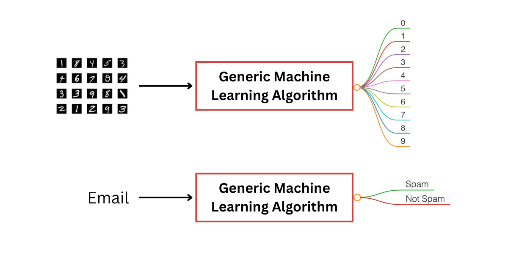
But the real question is: how does the machine get the ability to learn, and that too without being explicitly programmed?
And we all know that whatever a machine does, it does because it has been explicitly programmed to do so.
The ability to learn without being explicitly programmed is all about finding the pattern.
Let's figure out how it finds the pattern by examining the following dataset:
| x1 | x2 | y |
|---|---|---|
| 4 | 2 | 8 |
| 1 | 2 | 5 |
| 0 | 5 | 10 |
| 2 | 1 | 4 |
Each row in the table is just a triplet: x1, x2, and y. There's a simple pattern hiding inside. For every row, y is tied to the values of x1 and x2. Try to spot the pattern yourself before you read ahead.
In this case, with a bit of pencil-and-paper work, you can figure out that:
y = x1 + 2 × x2
And we can also write it as below:
y = w1 × x1 + w2 × x2
where w1 = 1 and w2 = 2
We found the pattern here. The relationship between y, x1, and x2 comes from the constants w1 and w2. These constants act as the weights in the linear equation that links y with x1 and x2.
What we actually did here is:
We built a simple model: a linear one, because it represents a straight-line relationship between the inputs(x1 and x2) and the output(y):
y = w1 × x1 + w2 × x2
Then we learned the weights by observing the dataset.
Learned weights: w1 = 1 and w2 = 2
We found the pattern and learned the weights.
Once we've learned the weights, w1 and w2, we can use them to predict y for any new x1 and x2, even ones not in our original dataset. For example, if x1 = 3 and x2 = 4, just plug them into the equation y = x1 + 2 × x2, and you get y = 11.
We just built a model that can predict for any new input.
But notice, we did all of this ourselves, without using any machines.
This was a small dataset representing a linear relationship between the inputs(x1 and x2) and the output(y), and we were able to find the pattern manually. But imagine a dataset with thousands or millions of rows, and instead of just two inputs (x1 and x2), you have hundreds or thousands of inputs. Suddenly, "finding the pattern" is no longer something you can do by hand.
This is exactly where Machine Learning shines.
The entire job of a Machine Learning model is:
Take data → Find the pattern → Learn the weights (w1, w2).
These weights become the "knowledge" of the model.
So when we say the machine learns, we simply mean: It keeps adjusting the weights until the predicted y matches the actual y as closely as possible.
- Actual y is the real value from your dataset, the ground truth, represented by y.
- Predicted y is the value the model computes using the current weights, represented by ŷ.
But where do these weights come from?
The learning process works like this:
- Start with random weights: The model doesn't know anything in the beginning.
- Make a prediction using these weights:
ŷ = w1 × x1 + w2 × x2. - Compare the prediction with the actual value (y): This tells us how wrong the prediction was. Error = actual y - predicted y = y - ŷ.
- Adjust the weights: The model tweaks
w1andw2slightly so the next prediction becomes a bit better. - Repeat this process thousands of times: Each iteration moves the model closer to the true pattern.
This entire loop is called training.
Let's see, step by step, how this happens.
ŷ = w1 × x1 + w2 × x2
Error = actual y - predicted y = y - ŷ
Step 1
Assume initial weights: w1 = 0, w2 = 0
Calculate the predicted ŷ with these weights for every row.
| x1 | x2 | actual y | predicted ŷ | error (y − ŷ) |
|---|---|---|---|---|
| 4 | 2 | 8 | 0.0000 | 8.0000 |
| 1 | 2 | 5 | 0.0000 | 5.0000 |
| 0 | 5 | 10 | 0.0000 | 10.0000 |
| 2 | 1 | 4 | 0.0000 | 4.0000 |
Step 2
Adjusted: w1 = 0.225000, w2 = 0.400000
| x1 | x2 | actual y | predicted ŷ | error (y − ŷ) |
|---|---|---|---|---|
| 4 | 2 | 8 | 1.7000 | 6.3000 |
| 1 | 2 | 5 | 1.0250 | 3.9750 |
| 0 | 5 | 10 | 2.0000 | 8.0000 |
| 2 | 1 | 4 | 0.8500 | 3.1500 |
Step 3
Adjusted: w1 = 0.402375, w2 = 0.718500
| x1 | x2 | actual y | predicted ŷ | error (y − ŷ) |
|---|---|---|---|---|
| 4 | 2 | 8 | 3.0465 | 4.9535 |
| 1 | 2 | 5 | 1.8394 | 3.1606 |
| 0 | 5 | 10 | 3.5925 | 6.4075 |
| 2 | 1 | 4 | 1.5233 | 2.4767 |
...
...
...
Step 1000
Adjusted: w1 = 1 and w2 = 2
| x1 | x2 | actual y | predicted ŷ | error (y − ŷ) |
|---|---|---|---|---|
| 4 | 2 | 8 | 8 | 0 |
| 1 | 2 | 5 | 5 | 0 |
| 0 | 5 | 10 | 10 | 0 |
| 2 | 1 | 4 | 4 | 0 |
We are experimenting with the values of w1 and w2. Over many iterations, the errors shrink and the weights move toward the values that explain the data (here exactly w1 = 1, w2 = 2).
The technique of gradually adjusting the weights is driven by something you will hear everywhere in Machine Learning: Gradient Descent. This is the algorithm that helps the model move step-by-step towards better weights, so that the error decreases over time. Explaining Gradient Descent in depth is outside the scope of this post, but you now understand why we need it.
For now, just think of Gradient Descent as the mechanism that guides the model to find the best weights that match the data.
We can actually code this entire process ourselves. Every part of the learning loop: predicting, measuring error, adjusting weights, and repeating, can be written in just a few lines of code.
The following Python code demonstrates how to implement the linear model and learn the weights using gradient descent for 1000 steps. We have skipped a few parts of the code and asked you to ignore certain details to keep it simple for educational purposes.
# Linear model example: y = w1*x1 + w2*x2
import numpy as np
# Dataset
X = np.array([[4, 2],
[1, 2],
[0, 5],
[2, 1]], dtype=float)
y = np.array([8, 5, 10, 4], dtype=float)
# Initialize weights
w = np.array([0.0, 0.0])
learning_rate = 0.01 # Determines the size of each weight update, no need to focus on this detail now
steps = 1000
n = X.shape[0] # number of data points
# Training loop
for step in range(steps):
# Compute predictions
y_pred = np.dot(X, w)
# Compute error
error = y - y_pred
# Update weights using gradient descent
gradient = -(2/n) * np.dot(X.T, error) # Computes the direction to adjust weights; no need to dive into the math now
w = w - learning_rate * gradient
# Optional: print every 10 steps
if (step+1) % 10 == 0:
print(f"After Step {step+1}: w1 = {w[0]:.6f}, w2 = {w[1]:.6f}")
# Final weights
print("\nFinal learned weights:")
print(f"w1 = {w[0]:.6f}, w2 = {w[1]:.6f}")
# Predict for a new input
x_new = np.array([3, 4])
y_new = np.dot(x_new, w)
print(f"\nPrediction for x1=3, x2=4: y = {y_new:.2f}")
You can run this code using a Python interpreter on your local machine, or an online editor, and observe how the weights gradually learn the pattern and predictions improve over time.
As Machine Learning engineers, our workflow looks like this:
- Understand the data.
- Choose the right model: a linear model if the relationship is simple, a tree-based model if the boundaries are complex, or a deep learning model when the patterns are highly nonlinear or the data is large.
- Train the model to learn the weights.
- Evaluate.
- Deploy it to make predictions on new data.
Machine Learning = Learning the best weights from data.
Once the model learns the correct weights, it becomes capable of predicting outputs for new inputs it has never seen before. This is the "magic" of machine learning, but as you can see, there's no magic at all, just math.
Before closing, it's helpful to understand where Machine Learning sits in the broader world of Artificial Intelligence.
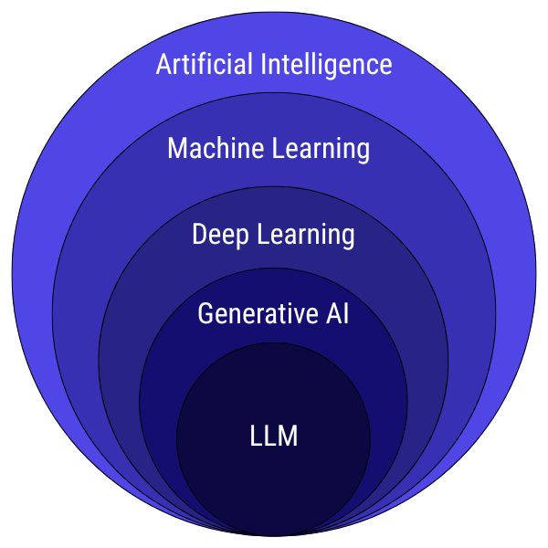
To put everything in context, here’s how different terms in AI relate to each other:
- Artificial Intelligence (AI): The broadest field, any system that mimics human-like intelligence.
- Machine Learning (ML): A subset of AI that learns patterns from data (like what we just explored).
- Deep Learning (DL): A subset of ML that uses neural networks with many layers.
- Generative AI: Deep learning models capable of creating new content: text, image, audio, video.
- LLMs (Large Language Models): A specific kind of generative AI specialized in understanding and generating human language.
That was all about Machine Learning.
Frequently Asked Questions
Is Machine Learning the same as Artificial Intelligence?
No. Artificial Intelligence is the broadest field, covering any system that mimics human-like intelligence. Machine Learning is a subset of AI that learns patterns from data. Deep Learning is a further subset of Machine Learning that uses neural networks with many layers.
Do we need to write new code for every Machine Learning problem?
No. Machine Learning uses generic algorithms, so we feed data to the algorithm and it finds the pattern hidden in the data. The same classification algorithm that recognizes handwritten digits can also classify emails into spam or not-spam. Only the training data changes.
What do the weights of a model actually represent?
The weights are the knowledge of the model. They are the constants that link the inputs to the output, like w1 and w2 in a linear equation. Once the model learns the correct weights, it can predict outputs for new inputs it has never seen before.
What role does Gradient Descent play in training?
Gradient Descent is the mechanism that guides the model to find the best weights. It helps the model move step by step towards better weights, so that the error between the predicted value and the actual value decreases over time.
Is there any magic in how a machine learns?
No. There is no magic at all, just math. The model starts with random weights, makes a prediction, compares it with the actual value, and adjusts the weights slightly. It repeats this loop thousands of times until the predicted value matches the actual value as closely as possible.
Lesson 1.2
Supervised vs Unsupervised Learning
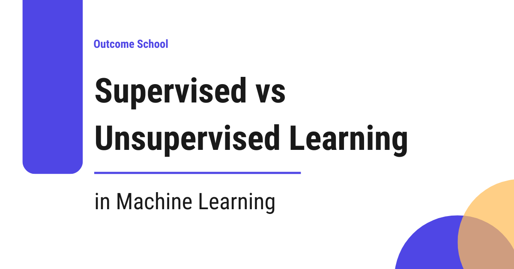
Supervised Learning learns from data that comes with labels (answers), just like learning with a teacher, whereas Unsupervised Learning finds patterns in data without any labels, just like learning without a teacher.
In this blog, we will learn about Supervised vs Unsupervised Learning in Machine Learning.
Let's get started.
Prerequisite: What is Machine Learning?
As we have learned, machine learning is all about enabling computers to learn patterns from data. But the way they learn depends on whether the data comes with labels (answers) or not. This brings us to two major learning categories:
- Supervised Learning
- Unsupervised Learning
Both solve completely different kinds of problems, and understanding the difference is essential before you start building any ML model.
Supervised Learning
Supervised learning is like learning with a teacher.
You can also think of it this way: You’re solving math problems with the answer key next to you. You learn by comparing your answers to the correct ones.
You provide the model with:
- Input data
- Correct output labels
The goal is for the model to learn the mapping between inputs and outputs so that it can make predictions on new, unseen data.
Let's look at a few examples of supervised learning:
- Predicting house prices
- Classifying emails as spam or not spam
- Recognizing digits from images
- Predicting whether a customer will churn
How does it work?
- Feed the model data + correct labels (answers).
- Model makes predictions.
- Compare predictions with the correct labels (answers).
- Adjust weights using an optimization algorithm.
- Repeat until error is minimized.
Types of Supervised Learning
- Classification: Categorizing data into predefined classes (spam detection, image recognition)
- Regression: Predicting continuous numerical values (house prices, stock prices, temperature forecasting)
Now, let's look at the example dataset for supervised learning.
A simple example dataset used for house price prediction: This dataset contains features(Area, Bedrooms, Location Score) + label(Price), needed for supervised learning.
| Area (sq ft) | Bedrooms | Location Score | Price (₹ Lakhs) |
|---|---|---|---|
| 1200 | 2 | 7.5 | 85 |
| 1500 | 3 | 8.0 | 110 |
| 900 | 2 | 6.8 | 70 |
| 1800 | 3 | 8.5 | 130 |
| 1100 | 2 | 7.0 | 78 |
Here, Price is the label (the output variable). The model learns to predict price based on the features.
So, when you provide new unseen input data(area, number of bedrooms, and location score), the model can predict the price.
Unsupervised Learning
Unsupervised learning is like learning without a teacher.
You can also think of it this way: You’re exploring a new city without a map. You observe patterns, such as busy areas and quiet areas, even though no one tells you which is which.
Here, the dataset contains only the input data, no labels, no predefined outputs.
The goal is to uncover hidden patterns, structures, or groupings within the data.
Let's look at a few examples of unsupervised learning:
- Grouping customers into segments
- Finding patterns in website user behavior
- Detecting anomalies (fraud, unusual transactions)
- Reducing dimensions (PCA - Principal Component Analysis)
How does it work?
- Feed the model only raw data.
- Model analyzes the structure.
- It tries to group, compress, or find relationships without external guidance.
Types of Unsupervised Learning
- Clustering: Grouping similar data points together (K-Means).
- Dimensionality Reduction: Compressing data while preserving important information (PCA - Principal Component Analysis).
- Generative Modeling: Learning the structure of data to generate brand new samples (Variational Autoencoders).
Now, let's look at the example dataset for unsupervised learning.
An example dataset used for fitness app user segmentation: Unlabeled Raw Fitness App User Data
A fitness app wants to understand user behavior and identify different types of users even though no labels exist.
| User ID | Daily Steps | Active Minutes | Weekly Workouts | Avg Heart Rate | Sleep Hours | Water Intake (L) | App Engagement Score |
|---|---|---|---|---|---|---|---|
| 1 | 12,500 | 75 | 5 | 72 | 7.5 | 2.8 | 88 |
| 2 | 9,200 | 50 | 3 | 78 | 6.8 | 2.1 | 75 |
| 3 | 4,800 | 18 | 1 | 85 | 6.0 | 1.5 | 52 |
| 4 | 15,000 | 92 | 6 | 68 | 8.0 | 3.2 | 93 |
| 5 | 8,000 | 40 | 2 | 80 | 6.5 | 1.9 | 67 |
| 6 | 13,400 | 80 | 4 | 74 | 7.2 | 2.6 | 85 |
| 7 | 5,600 | 25 | 1 | 82 | 6.2 | 1.7 | 58 |
| 8 | 10,500 | 60 | 3 | 76 | 7.0 | 2.3 | 78 |
There is no label here. An algorithm like K-Means will try to group customers into clusters based on these features.
After applying K-Means, the model finds natural patterns that map to real-world fitness personas.
| User ID | Daily Steps | Active Minutes | Weekly Workouts | Avg Heart Rate | Sleep Hours | Water Intake (L) | App Engagement Score | Segment |
|---|---|---|---|---|---|---|---|---|
| 1 | 12,500 | 75 | 5 | 72 | 7.5 | 2.8 | 88 | Active Lifestyle Enthusiasts |
| 2 | 9,200 | 50 | 3 | 78 | 6.8 | 2.1 | 75 | Moderate Fitness Users |
| 3 | 4,800 | 18 | 1 | 85 | 6.0 | 1.5 | 52 | Low Activity Busy Users |
| 4 | 15,000 | 92 | 6 | 68 | 8.0 | 3.2 | 93 | Active Lifestyle Enthusiasts |
| 5 | 8,000 | 40 | 2 | 80 | 6.5 | 1.9 | 67 | Moderate Fitness Users |
| 6 | 13,400 | 80 | 4 | 74 | 7.2 | 2.6 | 85 | Active Lifestyle Enthusiasts |
| 7 | 5,600 | 25 | 1 | 82 | 6.2 | 1.7 | 58 | Low Activity Busy Users |
| 8 | 10,500 | 60 | 3 | 76 | 7.0 | 2.3 | 78 | Moderate Fitness Users |
Without any labels, the model still identifies meaningful clusters such as Active Lifestyle Enthusiasts, Moderate Fitness Users, and Low Activity Busy Users.
Differences Between Supervised and Unsupervised Learning
Let's summarize the differences in a tabular format.
| Supervised Learning | Unsupervised Learning |
|---|---|
| Labeled Data | Unlabeled Data |
| Predicts output label. | Discovers hidden patterns, groups similar data, or reduces data dimensionality. |
| Types: Classification, Regression | Types: Clustering, Dimensionality Reduction |
| Examples: Spam detection, price prediction | Examples: Customer segmentation, anomaly detection |
| Algorithms: Linear Regression, Logistic Regression, Decision Trees, Random Forests | Algorithms: K-Means Clustering, Hierarchical Clustering, Principal Component Analysis (PCA) |
| Use it when you know the target variable, you want predictions, and you have labeled data or can generate labels. | Use it when you want to explore the data, labels are not available, and you need natural groupings or structure. |
Both supervised and unsupervised learning are essential parts of machine learning. Supervised learning helps you predict, while unsupervised learning helps you discover.
Frequently Asked Questions
Is K-Means supervised or unsupervised learning?
K-Means is unsupervised learning. It is a clustering algorithm that groups similar data points together without any labels. For example, it can group fitness app users into segments like Active Lifestyle Enthusiasts, Moderate Fitness Users, and Low Activity Busy Users.
What is the difference between classification and regression?
Both are types of supervised learning. Classification categorizes data into predefined classes, such as spam detection or image recognition. Regression predicts continuous numerical values, such as house prices, stock prices, or temperature forecasts.
Is generative modeling a type of unsupervised learning?
Yes. Generative modeling is one of the types of unsupervised learning, along with clustering and dimensionality reduction. It learns the structure of the data to generate brand new samples, as Variational Autoencoders do.
When should we choose unsupervised learning over supervised learning?
We should choose unsupervised learning when we want to explore the data, labels are not available, and we need natural groupings or structure. If we know the target variable, want predictions, and have labeled data, supervised learning is the better fit.
Lesson 1.3
Linear Regression vs Logistic Regression
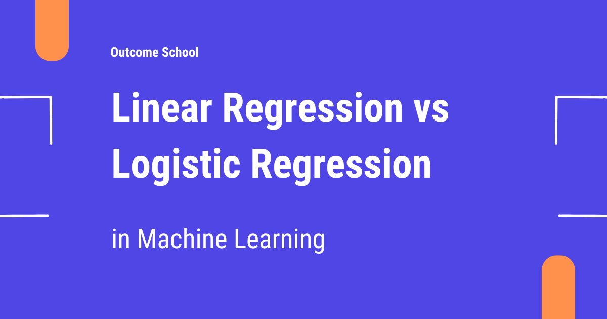
Linear Regression predicts a continuous value, like the price of a house, whereas Logistic Regression predicts a category, like whether an email is spam or not.
In this blog, we will learn about Linear Regression vs Logistic Regression in Machine Learning.
Let's get started.
In machine learning, the two fundamental algorithms you will frequently encounter are Linear Regression and Logistic Regression. Although they sound similar, they are designed for fundamentally different tasks. Understanding their differences is crucial for choosing the right one. Let's explore what they are, how they work, and when to use them.
But before diving into the algorithms, it's important to understand the difference between regression and classification.
Regression
It predicts a continuous value.
A continuous value is numeric and can take any value. These values are measurable such as temperature, height, weight, or house prices.
Example: Predicting house prices, temperature, or stock prices.
Classification
It predicts a categorical value.
A categorical value, on the other hand, represents discrete groups or classes. These values are descriptive and usually non-numeric, like "yes/no," "red/blue/green," or "spam/not-spam." Categorical values are used in classification problems, where the aim is to assign inputs to a specific category or class.
Example: Predicting whether an email is spam or not, or whether a patient has a disease or not.
Once such a classifier is built, its quality is measured using Precision and Recall. We have a detailed blog on Precision vs Recall that explains how both work.
Now it's time to jump into our main topic: Linear Regression vs Logistic Regression. Let's start with Linear Regression.
Linear Regression
Linear Regression is one of the most basic algorithms in supervised learning. It is used to predict a continuous value based on one or more input features.
Most importantly, it predicts a continuous value using a linear relationship between inputs and output.
Linear Regression uses a simple linear equation for the input variables (x) and the output variable (y):
y = w1 × x1 + w2 × x2
x1,x2are input features.w1,w2are weights.yis the predicted continuous value.
The algorithm finds the line (or hyperplane in multiple dimensions) that best fits the data by minimizing the Mean Squared Error (MSE) between predicted and actual values.
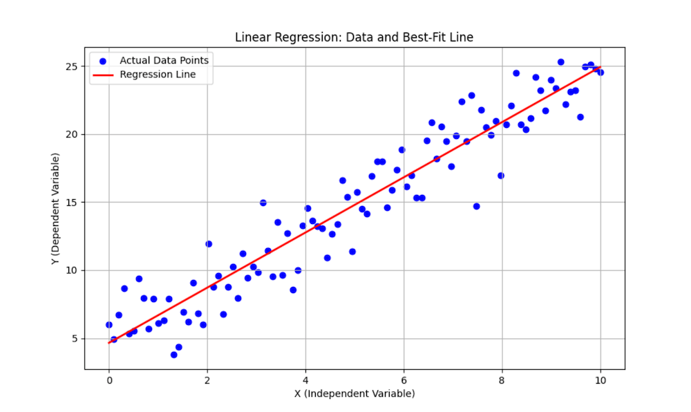
Linear Regression fits a straight line to predict a continuous numeric value, with no limits on the output range, it can go below 0 or above 1.
And finally, as a prediction, we get a continuous value.
Example: Predicting house prices based on size and location.
This was all about the Linear Regression. Now it's time to learn Logistic Regression.
Logistic Regression
Logistic Regression, despite its name, is used for classification problems in supervised learning, not regression. It predicts the probability that a given input belongs to a particular class.
It starts with the same linear combination of inputs:
z = w1 × x1 + w2 × x2 // notice we’re using z instead of y
Then applies the sigmoid (logistic) function:
y = σ(z) = 1 / (1 + e^(-z))
This converts the raw value z into a probability between 0 and 1.
That probability is then converted into a class:
- If probability ≥ 0.5 → Class 1
- If probability < 0.5 → Class 0
The model is trained using Cross-Entropy loss function. This loss function is mainly used for classification problems.
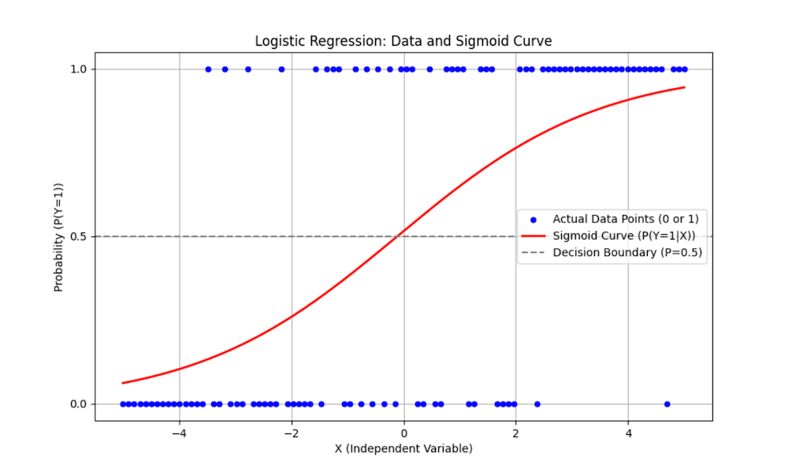
Logistic Regression uses an S-shaped curve (Sigmoid) to predict the probability, which is always restricted to the range [0, 1].
And finally, as a prediction, we get probabilities, that works well for classification.
You might be wondering: if the algorithm is used for classification, why is it called Logistic Regression, especially the "Regression" part of the name?
The name comes from the way the model is built, not the task it performs.
Logistic Regression actually starts by doing something that looks exactly like linear regression. It takes the input features and forms a linear combination:
z = w1 × x1 + w2 × x2
This part is literally a regression-style calculation, nothing about classification yet.
Then comes the twist: instead of using z directly, the model passes it through the logistic (sigmoid) function to convert it into a probability between 0 and 1:
y = σ(z) = 1 / (1 + e^(-z))
That probability is then used to decide the final class.
So even though the final outcome is classification, the model's internal mechanics are:
- Linear regression-like equation
- Followed by a logistic transformation using sigmoid function.
- Producing probabilities for classification
Because the core computation is regression-based, the name "Logistic Regression" remained, even though we use it for classification.
That's why the name is Logistic Regression.
So, this was all about the Logictic Regression.
Differences Between Linear Regression and Logistic Regression
Let's summarize the differences in a tabular format.
| Linear Regression | Logistic Regression |
|---|---|
| Regression: Continuous value | Classification: Probability (0–1) → Class |
| y = w1 × x1 + w2 × x2 | z = w1 × x1 + w2 × x2 → y = sigmoid(z) |
| Loss Function: Mean Squared Error | Loss Function: Cross-Entropy |
| Examples: House price, temperature | Examples: Spam detection, disease prediction |
| Use it when the target is continuous | Use it when the target is categorical |
I hope this explanation helped.
You can find the complete code that contains the implementation of linear regression and logistic regression from scratch. Check Build your own X - Machine Learning
Frequently Asked Questions
Is Logistic Regression used for regression or classification?
Logistic Regression is used for classification, not regression. It predicts the probability that an input belongs to a particular class. The name comes from the way the model is built, since it starts with a regression-style linear equation before applying the sigmoid function.
What is the difference between regression and classification?
Regression predicts a continuous value, and classification predicts a categorical value. A continuous value is numeric and measurable, like temperature, height, or house prices. A categorical value represents discrete groups, like spam or not spam, so the aim is to assign each input to a class.
Can Linear Regression predict values below 0 or above 1?
Yes. Linear Regression fits a straight line, so its output has no limits on range and can go below 0 or above 1. Logistic Regression is different. It passes the value through the sigmoid function, so the output is always a probability between 0 and 1.
Which loss function does each model use?
Linear Regression uses Mean Squared Error, and Logistic Regression uses Cross-Entropy. Linear Regression finds the line that best fits the data by minimizing the Mean Squared Error between predicted and actual values. Cross-Entropy is mainly used for classification problems, which is why Logistic Regression is trained with it.
How does Logistic Regression turn a probability into a class?
Logistic Regression uses a threshold of 0.5. If the probability is greater than or equal to 0.5, the input goes to Class 1. If the probability is less than 0.5, the input goes to Class 0.
Lesson 1.4
What is Feature Engineering in Machine Learning?
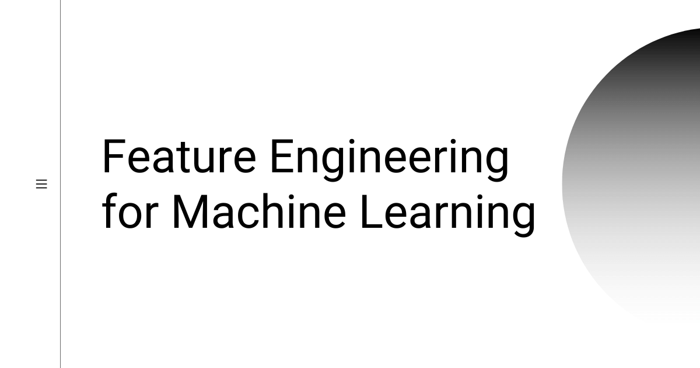
Feature Engineering is the process of using domain knowledge of the data to create features that make Machine Learning algorithms work. If it is done correctly, it increases the predictive power of the model.
In this blog, we will learn about the Feature Engineering for Machine Learning.
Let's get started.
Feature Engineering is an art
Feature engineering is the process of using domain knowledge of the data to create features that make machine learning algorithms work. If feature engineering is done correctly, it increases the predictive power of machine learning algorithms by creating features from raw data that help facilitate the machine learning process. Feature Engineering is an art.
Steps which are involved while solving any problem in machine learning are as follows:
- Gathering data.
- Cleaning data.
- Feature engineering.
- Defining model.
- Training, testing model and predicting the output.
Feature engineering is the most important art in machine learning which creates the huge difference between a good model and a bad model. Let's see what feature engineering covers.
Suppose, we are given a data "flight date time vs status". Then, given the date-time data, we have to predict the status of the flight.
| Date_Time_Combined | Status | |
|---|---|---|
| 0 | 2018-02-14 20:40 | Delayed |
| 1 | 2018-02-15 10:30 | On Time |
| 2 | 2018-02-14 07:40 | On Time |
| 3 | 2018-02-15 18:10 | Delayed |
| 4 | 2018-02-14 10:20 | On Time |
As the status of the flight depends on the hour of the day, not on the date-time. We will create the new feature Hour_Of_Day. Using the Hour_Of_Day feature, the machine will learn better as this feature is directly related to the status of the flight.
| Hour_Of_Day | Status | |
|---|---|---|
| 0 | 20 | Delayed |
| 1 | 10 | On Time |
| 2 | 7 | On Time |
| 3 | 18 | Delayed |
| 4 | 10 | On Time |
Here, creating the new feature Hour_Of_Day is the feature engineering.
Let's see another example. Suppose we are given the latitude, longitude and other data with the given label Price_Of_House. We need to predict the price of the house in that area. The latitude and longitude are not of any use if they are alone. So, here we will use the crossed column feature engineering. We will combine the latitude and the longitude to make one feature. Combining into one feature will help the model learn better.
Here, combining two features to create one useful feature is the feature engineering.
Sometimes, we use the bucketized column feature engineering. Suppose we are given a data in which one column is the age and the output is the classification(X, Y, Z). By seeing the data, we realized that the output(X, Y, Z) is dependent on the age-range like 11-20 years age-range output to X, 21-40 years output to Y, 41-70 years output to Z. Here, we will create 3 buckets for the age-range 11-20, 21-40 and 41-70. We will create the new feature which is the bucketized column Age_Range having the numerical values 1, 2 and 3 where 1 is mapped to the bucket 1, 2 is mapped to the bucket 2 and 3 is mapped to the bucket 3.
Here, creating Age_Range bucket is the feature engineering.
Sometimes, removing the unwanted feature is also feature engineering. As the feature which is not related degrade the performance of the model.
Now, the steps to do feature engineering are as follows:
- Brainstorm features.
- Create features.
- Check how the features work with the model.
- Start again from first until the features work perfectly.
This is what we do in the feature engineering.
Some words on feature engineering by the experts
Feature engineering is another topic which doesn’t seem to merit any review papers or books, or even chapters in books, but it is absolutely vital to ML success. Much of the success of machine learning is actually success in engineering features that a learner can understand.
Actually the success of all Machine Learning algorithms depends on how you present the data.
The algorithms we used are very standard for Kagglers. We spent most of our efforts in feature engineering.
Feature engineering is the process of transforming raw data into features that better represent the underlying problem to the predictive models, resulting in improved model accuracy on unseen data.
Feature engineering turn your inputs into things the algorithm can understand.
Last but not least, Automated Feature Engineering is the current hot topic. But it requires a lot of resources. Few companies have already started working on it.
Frequently Asked Questions
Is removing features also part of feature engineering?
Yes. Removing an unwanted feature is also feature engineering. A feature that is not related to the output can degrade the performance of the model. So, along with creating new features, we should also drop the ones that do not help.
Where does feature engineering fit in a machine learning project?
Feature engineering comes after gathering and cleaning the data, and before defining the model. After it, we train and test the model and predict the output. It is the step that creates the huge difference between a good model and a bad model.
What is a crossed column in feature engineering?
A crossed column combines two features into one useful feature. For example, latitude and longitude are not of much use alone when we want to predict the price of a house. Combining them into one feature helps the model learn better.
Can feature engineering be automated?
Yes. Automated Feature Engineering is a current hot topic, and a few companies have already started working on it. But it requires a lot of resources.
Lesson 1.5
Precision vs Recall
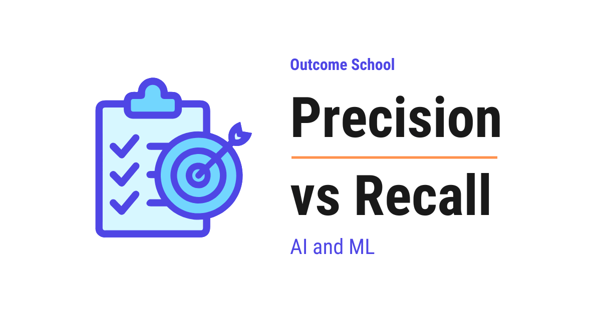
Precision tells us how many of the items we flagged were actually correct, whereas Recall tells us how many of all the real items we actually managed to catch.
In this blog, we will learn about Precision vs Recall, the two numbers we use to measure how good a system is at making yes-or-no decisions. We will also see how Precision and Recall differ from each other and when to use which one, what the four possible outcomes of any such decision are, why these two numbers pull against each other, and how the cost of a mistake decides which one we must care about more.
We will cover the following:
- The problem we are trying to solve
- The four possible outcomes
- What is Precision?
- What is Recall?
- Precision vs Recall
- When to use which one?
- A quick recap of the formulas
- Summary
Let's get started.
The problem we are trying to solve
Before jumping into Precision and Recall, we must understand where they are used.
Let's say we have built a system that answers a simple yes-or-no question. For example, a spam filter that looks at an email and decides, "Is this email spam or not?"
A yes-or-no system like this is a classification model, and classification comes under supervised learning. We have a detailed blog on Supervised vs Unsupervised Learning that explains this in depth.
Now, our system will make some correct decisions and some wrong decisions. We need a way to measure how good our system really is. Just saying "it works fine" is not enough. We need proper numbers.
This is where Precision and Recall come into the picture. They are two numbers that tell us how good our system is, but they measure two different things.
The best way to learn this is by taking an example. So, for this whole blog, we will use one simple example: a spam filter that flags spam emails.
The four possible outcomes
Before we understand Precision and Recall, we must first understand the four outcomes. Every decision our spam filter makes falls into one of four boxes.
Let's say an email comes in. There are two truths: the email is really spam, or it is really not spam. And there are two decisions: our filter flags it as spam, or it does not. When we mix these, we get four outcomes.
- True Positive: The email was really spam, and our filter correctly flagged it as spam. This is a correct catch.
- False Positive: The email was not spam, but our filter wrongly flagged it as spam. This is a false alarm. A real email got sent to the spam folder.
- False Negative: The email was really spam, but our filter missed it and let it into the inbox. This is a miss.
- True Negative: The email was not spam, and our filter correctly let it into the inbox. This is a correct pass.
Let's understand these four boxes with a simple table like below:
Really Spam Really Not Spam
+---------------------+---------------------+
Flagged as | True Positive | False Positive |
spam | (correct catch) | (false alarm) |
+---------------------+---------------------+
Not flagged | False Negative | True Negative |
as spam | (missed spam) | (correct pass) |
+---------------------+---------------------+
Here, we can see all four outcomes clearly. The True Positive and the True Negative boxes are the correct decisions. The False Positive and the False Negative boxes are the mistakes.
Now that we know these four boxes, understanding Precision and Recall becomes very easy. Let's start with Precision.
What is Precision?
Precision answers this question: Out of all the emails we flagged as spam, how many were actually spam?
In simple words, Precision checks how often our filter was correct when it raised an alarm. It looks only at the emails we flagged, and it asks how many of those were truly spam.
Let's say our filter flagged 10 emails as spam. Out of these 10, only 8 were really spam, and 2 were actually good emails. So, our Precision is 8 out of 10, which is 80%.
The formula is simple:
True Positive
Precision = ------------------------------
True Positive + False Positive
Here, we can see that Precision only cares about the emails we flagged. The bottom part of the formula is all the flagged emails (correct catches plus false alarms). The top part is only the correct catches.
So, high Precision means that when our filter says "this is spam", we can trust it. Very few good emails get wrongly flagged.
When Precision is low: It means our filter is flagging too many good emails as spam. This is annoying, because an important email can get lost in the spam folder.
What is Recall?
Now that we have learned about Precision, it's time to learn about Recall.
Recall answers this question: Out of all the emails that were really spam, how many did we actually catch?
In simple words, Recall checks how many of the real spam emails our filter managed to find. It looks at all the true spam that exists, and it asks how much of it we caught.
Let's say there were 20 real spam emails in total. Our filter caught 8 of them and missed 12. So, our Recall is 8 out of 20, which is 40%.
The formula is simple:
True Positive
Recall = ------------------------------
True Positive + False Negative
Here, we can see that Recall cares about all the real spam. The bottom part of the formula is all the actual spam emails (the ones we caught plus the ones we missed). The top part is only the ones we caught.
So, high Recall means our filter catches most of the spam. Very little spam slips into the inbox.
When Recall is low: It means a lot of spam is getting past our filter and landing in the inbox. Our filter is missing too much.
Precision vs Recall
Now, here is the most interesting part. Precision and Recall usually pull against each other. When we try to increase one, the other often goes down. It is like a tug of war.
Let's understand why.
Suppose we make our filter very strict, so it flags an email as spam only when it is 100% sure. Now it will rarely make a false alarm. So, our Precision goes up. But because it is so strict, it will also miss many spam emails that it was not fully sure about. So, our Recall goes down.
Now, suppose we make our filter very relaxed, so it flags an email as spam even on a small doubt. Now it will catch almost all the spam. So, our Recall goes up. But it will also wrongly flag many good emails. So, our Precision goes down.
We can picture this tug of war like below:
Very strict filter Very relaxed filter
Flags only when 100% sure Flags on any small doubt
| |
v v
Precision goes UP Recall goes UP
Recall goes DOWN Precision goes DOWN
Here, we can clearly see the trade-off. We usually cannot get both very high at the same time. So, we must decide which one matters more for our problem.
Let me tabulate the differences between Precision and Recall for your better understanding.
| Point | Precision | Recall |
|---|---|---|
| Main question | Of the ones we flagged, how many were correct? | Of all the real ones, how many did we catch? |
| Focus | Being correct when we raise an alarm | Not missing the real ones |
| Formula bottom | True Positive + False Positive | True Positive + False Negative |
| Low value means | Too many false alarms | Too many misses |
| We care about | Avoiding false alarms | Avoiding misses |
When to use which one?
This is the real question. Whether we care more about Precision or more about Recall depends on the cost of the mistake. Let's understand with two examples.
When Precision matters more: Think about our spam filter. Here, wrongly flagging a good email as spam is very costly. An important message from our boss or bank can get lost in the spam folder. So, we want to be very sure before flagging. Here, we care more about Precision. A false alarm is worse than a small miss.
When Recall matters more: Now, think about a medical test that checks for a serious disease. Here, missing a sick patient is very dangerous. If we tell a sick person they are healthy, they will not get treatment, and that can cost a life. So, we want to catch every possible case, even if it means a few false alarms. Here, we care more about Recall. A miss is far worse than a false alarm.
So, the rule is simple:
- If a false alarm is costly, we care more about Precision.
- If a miss is costly, we care more about Recall.
The same two numbers are how we measure modern AI systems as well. A RAG pipeline, for example, is scored on Context Precision and Context Recall in exactly this way. We have a detailed blog on LLM Evaluation that covers this end to end.
Note: Sometimes we want a good balance of both. In that case, we use a single combined score called the F1 Score, which mixes Precision and Recall into one number. We can explore that in another blog.
A quick recap of the formulas
Let's keep both formulas together so that we never forget them.
True Positive
Precision = ------------------------------
True Positive + False Positive
True Positive
Recall = ------------------------------
True Positive + False Negative
Here, we can notice one thing. Both formulas have True Positive on the top. The only difference is the bottom part. Precision adds False Positive, and Recall adds False Negative.
Summary
Let's quickly recap what we have learned.
- Every yes-or-no decision falls into four boxes: True Positive, False Positive, False Negative, and True Negative.
- Precision asks: of all the ones we flagged, how many were correct?
- Recall asks: of all the real ones, how many did we catch?
- Precision and Recall usually pull against each other, like a tug of war.
- We care more about Precision when a false alarm is costly.
- We care more about Recall when a miss is costly.
This is how Precision and Recall help us measure our system in two different ways.
Now, we must have understood Precision vs Recall.
Frequently Asked Questions
Can a model have both high Precision and high Recall?
Usually not at the same time. Precision and Recall pull against each other like a tug of war. A very strict filter raises Precision but lowers Recall, while a very relaxed filter raises Recall but lowers Precision. So, we must decide which one matters more for our problem.
What should we use when we want a balance of Precision and Recall?
We use the F1 Score. It is a single combined score that mixes Precision and Recall into one number. It is useful when we do not want to favor one over the other and need a good balance of both.
Do Precision and Recall use True Negatives?
No. Neither formula includes True Negatives. Both formulas have True Positive on the top. The only difference is the bottom part, where Precision adds False Positive and Recall adds False Negative.
Why does Recall matter more for a medical test?
Recall matters more because missing a sick patient is very dangerous. If we tell a sick person they are healthy, they will not get treatment. So, we want to catch every possible case, even if it means a few false alarms.
Are Precision and Recall used to evaluate RAG pipelines?
Yes. The same two ideas are used to measure modern AI systems. A RAG pipeline, for example, is scored on Context Precision and Context Recall in exactly the same way.
Lesson 1.6
What Are L1 and L2 Loss Functions?
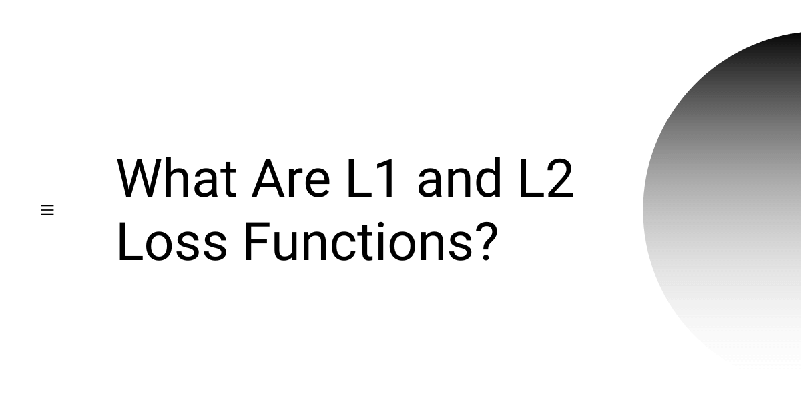
L1 and L2 are two loss functions in machine learning used to minimize the error. L1 Loss is the Least Absolute Deviations, and L2 Loss is the Least Square Errors. L2 is preferred in most cases, but L1 works better when there are outliers.
In this blog, we will learn about the L1 and L2 Loss functions.
Let's get started.
L1 vs L2 Loss Function
L1and L2 are two loss functions in machine learning which are used to minimize the error.
L1 Loss function stands for Least Absolute Deviations. Also known as LAD.
L2 Loss function stands for Least Square Errors. Also known as LS.
L1 Loss Function
L1 Loss Function is used to minimize the error which is the sum of the all the absolute differences between the true value and the predicted value.
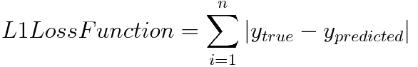
L2 Loss Function
L2 Loss Function is used to minimize the error which is the sum of the all the squared differences between the true value and the predicted value.
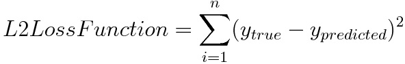
How to decide between L1 and L2 Loss Function?
Generally, L2 Loss Function is preferred in most of the cases. But when the outliers are present in the dataset, then the L2 Loss Function does not perform well. The reason behind this bad performance is that if the dataset is having outliers, then because of the consideration of the squared differences, it leads to the much larger error. Hence, L2 Loss Function is not useful here. Prefer L1 Loss Function as it is not affected by the outliers or remove the outliers and then use L2 Loss Function.
Watch the video format: L1 and L2 Loss Functions in Machine Learning
Frequently Asked Questions
What are the other names of L1 and L2 Loss Functions?
L1 Loss Function stands for Least Absolute Deviations, also known as LAD. L2 Loss Function stands for Least Square Errors, also known as LS. Both are loss functions in machine learning that are used to minimize the error.
Is L1 Loss Function affected by outliers?
No. L1 Loss Function is not affected by the outliers. This is why we prefer L1 Loss Function when outliers are present in the dataset. L2 Loss Function does not perform well in that case.
Why do outliers hurt L2 Loss Function?
L2 Loss Function uses the squared differences between the true value and the predicted value. When the dataset has outliers, squaring their differences leads to a much larger error. This is why L2 Loss Function does not perform well with outliers.
Can we still use L2 Loss Function if the dataset has outliers?
Yes. We can remove the outliers first and then use L2 Loss Function. Removing them avoids the much larger error that their squared differences would cause. The other option is to prefer L1 Loss Function, as it is not affected by the outliers.
Lesson 1.7
What is Regularization in Machine Learning? L1 vs L2 Explained
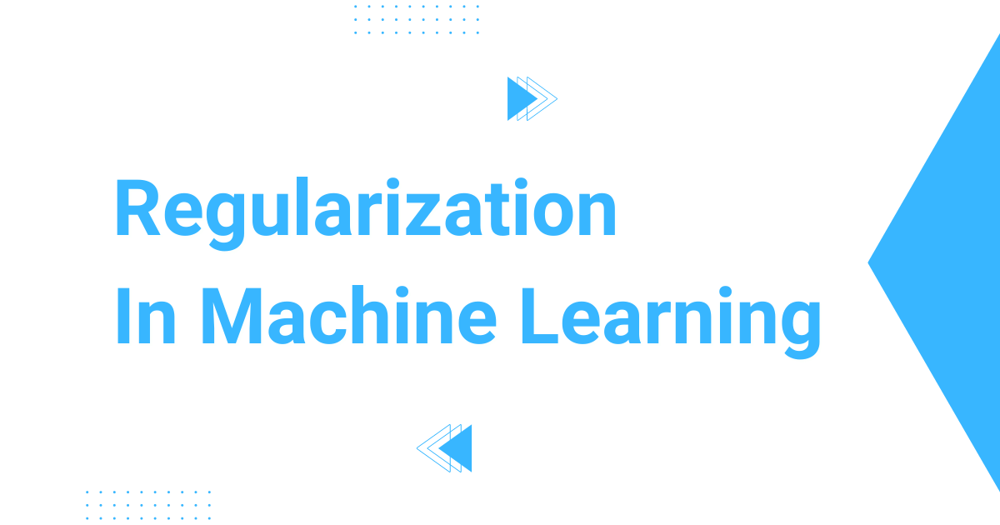
Regularization is a technique to reduce overfitting in Machine Learning by adding a penalty to the error function. L1 Regularization (Lasso) adds the sum of the absolute values of the weights, and L2 Regularization (Ridge) adds the sum of the squared values of the weights.
In this blog, we will learn about the Regularization In Machine Learning.
Let's get started.
Regularization is a technique which is used to solve the overfitting problem of the machine learning models.
Solving overfitting problem with regularization
What is overfitting?
Overfitting is a phenomenon which occurs when a model learns the detail and noise in the training data to an extent that it negatively impacts the performance of the model on new data.
So the overfitting is a major problem as it negatively impacts the performance.
Regularization technique to the rescue.
Generally, a good model does not give more weight to a particular feature. The weights are evenly distributed. This can be achieved by doing regularization.
There are two types of regularization as follows:
- L1 Regularization or Lasso Regularization
- L2 Regularization or Ridge Regularization
L1 Regularization or Lasso Regularization
L1 Regularization or Lasso Regularization adds a penalty to the error function. The penalty is the sum of the absolute values of weights.
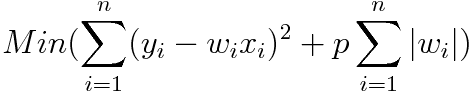
p is the tuning parameter which decides how much we want to penalize the model.
L2 Regularization or Ridge Regularization
L2 Regularization or Ridge Regularization also adds a penalty to the error function. But the penalty here is the sum of the squared values of weights.
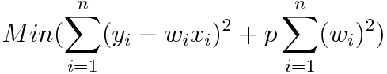
Similar to L1, in L2 also, p is the tuning parameter which decides how much we want to penalize the model.
This is Regularization.
Apart from L1 and L2, there are other regularization techniques as well. We have a detailed blog on Dropout in Neural Networks that explains how randomly switching off neurons reduces overfitting in deep neural networks.
Frequently Asked Questions
What is the difference between L1 and L2 regularization?
Both add a penalty to the error function, but the penalty is different. L1, or Lasso, uses the sum of the absolute values of the weights. L2, or Ridge, uses the sum of the squared values of the weights.
What does the tuning parameter p do in regularization?
The tuning parameter p decides how much we want to penalize the model. It plays the same role in both L1 and L2 regularization, controlling the strength of the penalty added to the error function.
Why does regularization help with overfitting?
Overfitting happens when a model learns the detail and noise in the training data, which hurts its performance on new data. A good model does not give more weight to a particular feature, and its weights are evenly distributed. Regularization helps achieve this by penalizing the weights.
Are L1 and L2 the only regularization techniques?
No. Apart from L1 and L2, there are other regularization techniques as well. For example, Dropout reduces overfitting in deep neural networks by randomly switching off neurons.
Lesson 1.8
What is Reinforcement Learning?
Reinforcement Learning (RL) is a type of machine learning where an Agent learns to make a sequence of decisions by interacting with an Environment, with the goal of getting the maximum Reward over time.
In this blog, we will learn about Reinforcement Learning, the branch of machine learning where an agent learns to make decisions by interacting with an environment and getting rewards or penalties for its actions.
We will cover the following:
- The Big Picture
- What is Reinforcement Learning?
- A Simple Real-World Analogy
- The Building Blocks of RL
- The Reinforcement Learning Loop
- Reinforcement Learning vs Supervised vs Unsupervised Learning
- Episode, Return, and Discount Factor
- Exploration vs Exploitation
- Common Families of RL Algorithms
- Where Is Reinforcement Learning Used?
- Why Reinforcement Learning Is Hard
- Quick Summary
Let's get started.
The Big Picture
Before we go into the details, let's understand the big picture.
Reinforcement Learning is how a system learns by doing. It tries something, sees the result, and adjusts. This is the classic trial and error style of learning.
There is no teacher giving the right answer for every single situation. Instead, there is a reward signal that tells the system whether it is doing well or badly, and the system slowly figures out the best way to act.
In simple words:
Reinforcement Learning = An Agent + An Environment + A Reward signal that guides the Agent to act better over time.
What is Reinforcement Learning?
Reinforcement Learning is one of the three main branches of machine learning, along with supervised learning and unsupervised learning.
Reinforcement Learning, often called RL, is a type of machine learning where an Agent learns to make a sequence of decisions by interacting with an Environment, with the goal of maximizing a Reward over time.
In simple words, the Agent is the learner, the Environment is the world the Agent acts in, and the Reward is the feedback signal that tells the Agent how well it is doing.
The Agent is not told which action is correct. It must figure that out by trying actions and observing the results.
A Simple Real-World Analogy
The best way to learn this is by taking an example.
Let's say we are training a puppy to sit.
- The puppy is the Agent.
- The room and the human are the Environment.
- When the puppy sits, we give it a treat. That treat is the Reward.
- When the puppy jumps on the sofa, we say "no". That is a negative reward.
The puppy does not understand our language. But over many tries, it learns:
- "When I sit, good things happen."
- "When I jump on the sofa, good things do not happen."
That is exactly how Reinforcement Learning works.
The Agent does not need a teacher who writes down the correct action for every situation. It learns the correct action by trying things and observing the reward.
The Building Blocks of RL
This was the intuition behind RL using the puppy example. Now, let's name the parts of RL formally so we can use the right vocabulary going forward.
RL has a few core building blocks. Let's decode each one.
Agent. The decision maker. It is the thing that learns. In a game, the Agent is the player. In robotics, the Agent is the robot's brain. In an LLM trained with human feedback, the Agent is the LLM itself.
Environment. Everything outside the Agent. The world the Agent acts in. The chess board, the maze, the road in front of the self-driving car, the ongoing conversation.
State. A snapshot of the Environment at one moment in time. Where the player is on the board. The position and speed of the robot. The current conversation history.
Action. What the Agent decides to do in that state. Move the chess piece. Turn the robot left. Generate the next word.
Reward. A number the Environment gives back after the Agent takes an action. Positive means good. Negative means bad. Zero means nothing important happened.
Policy. The Agent's strategy. A mapping from states to actions. "When I am in this state, I will take this action." The whole goal of RL is to learn a good Policy.
Value Function. An estimate of how much total reward the Agent expects to collect from a given State (or from a given State-Action pair) in the long run. Some RL algorithms use the Value Function to derive the Policy. We will see this in the algorithms section later.
The Reinforcement Learning Loop
Now that we know the building blocks, let's see how they interact with each other. The interaction between the Agent and the Environment happens in a loop.
+-----------------------+
| Agent |
+----------+------------+
|
| Action
v
+-----------------------+
| Environment |
+----------+------------+
|
| New State + Reward
v
+-----------------------+
| Agent |
+-----------------------+
Step by step:
Step 1: The Agent observes the current State of the Environment.
Step 2: The Agent picks an Action based on its current Policy.
Step 3: The Environment moves to a new state and gives back a Reward.
Step 4: The Agent updates its Policy using that reward.
Step 5: Repeat.
This loop runs millions of times. Slowly, the Policy gets better. The Agent learns which actions in which states lead to high reward.
This is exactly what was happening with the puppy. The puppy observed the State (us holding a treat), picked an Action (sit or jump), got a Reward (treat or no treat), and slowly updated its Policy. Same loop, just at a much smaller scale.
This is how Reinforcement Learning works at the core.
Reinforcement Learning vs Supervised vs Unsupervised Learning
This was all about the RL loop. Now, let's compare RL with the other two main branches of machine learning so we can clearly see what makes RL special. This is the most important comparison to understand.
We have a detailed blog on Supervised vs Unsupervised Learning that explains the first two in depth. Here, we will quickly compare all three.
| Type | What the data looks like | What the model learns |
|---|---|---|
| Supervised Learning | Inputs with correct outputs (labels) | Map each input to the correct output |
| Unsupervised Learning | Inputs only, no labels | Find hidden patterns, groups, or structure |
| Reinforcement Learning | No labeled data, only reward signals from interaction | A Policy that maximizes total reward over time |
Supervised learning has a teacher who shows the correct answer.
Unsupervised learning has no teacher and no rewards. It just looks for patterns.
Reinforcement learning has no teacher either. But it has an Environment that gives feedback in the form of a reward, and that reward is the only thing the Agent has to learn from.
Visually, the three look like this:
Supervised Learning:
Input --> Model --> Output
^
|
Correct Output (label)
Unsupervised Learning:
Input --> Model --> Patterns / Clusters
Reinforcement Learning:
Action
+------------------------+
| v
Agent Environment
^ |
| |
+------------------------+
New State + Reward
Here, we can notice that supervised learning has labels guiding the Model, unsupervised learning has nothing but the input data, and reinforcement learning is the only one with a feedback loop between the Agent and the Environment.
Episode, Return, and Discount Factor
Now that we have understood how RL is different from the other two, let's learn a few more terms that come up everywhere in RL.
Episode. One full run from start to end. One game of chess from move 1 to the final move. One round of a maze from start to finish. One conversation from the first message to the last. For our puppy, one episode is one full training round.
Return. The total reward collected during an episode. The Agent does not just want a single high reward in one step. It wants the highest total reward over the whole episode.
Discount Factor (often written as gamma). A number between 0 and 1 that tells the Agent how much to value future rewards compared to immediate rewards.
- A small gamma makes the Agent greedy for now. It cares mostly about the next reward.
- A large gamma makes the Agent patient. It is willing to give up a small reward now for a bigger reward later.
In simple words, the Discount Factor is how patient the Agent is.
Let's put this into perspective with real numbers:
Step: t=0 t=1 t=2 t=3 t=4 (end)
| | | | |
v v v v v
Reward: 0 0 +1 0 +10
Weight: gamma^0 gamma^1 gamma^2 gamma^3 gamma^4
Return = (gamma^0 * 0) + (gamma^1 * 0) + (gamma^2 * 1) + (gamma^3 * 0) + (gamma^4 * 10)
For gamma = 0.9:
Return = (1 * 0) + (0.9 * 0) + (0.81 * 1) + (0.729 * 0) + (0.6561 * 10)
= 0 + 0 + 0.81 + 0 + 6.561
= 7.371
Here, we can see that the reward of +10 at the end is worth 6.561 to the Agent at the start, not the full 10. The further away a reward is, the more it is discounted. A smaller gamma would shrink that future reward even more.
Exploration vs Exploitation
This was all about how rewards add up over time. Now, let's understand a key trade-off that every RL Agent has to deal with. This is one of the most important trade-offs in Reinforcement Learning.
- Exploitation = pick the action that is already known to give a good reward.
- Exploration = try a new action to see if it gives an even better reward.
Let's say we are in a new city and we want to find the best restaurant.
- If we only exploit, we go to the first decent restaurant we find and never try anything else. We will never know if there is a better place in town.
- If we only explore, we keep trying random new places forever and never settle on the good one.
A good RL Agent balances both. It exploits enough to use what it has already learned, and it explores enough to find something even better.
Common Families of RL Algorithms
Now that we have understood the trade-off, let's see how actual RL algorithms learn the Policy. There are many RL algorithms. Most of them fall into three families. We do not need to memorize them right now. The goal is to understand the high-level idea behind each family.
Value-based methods. The Agent learns the Value Function we saw earlier in the building blocks. The Policy is then derived from it: in each State, pick the Action with the highest predicted value. Q-learning is the classic example.
Policy-based methods. The Agent directly learns the Policy. It adjusts the Policy in the direction that increases reward. Policy Gradient methods are the classic example.
Actor-Critic methods. A combination of the two. One network, the Actor, learns the Policy. Another network, the Critic, learns the Value Function. The Critic guides the Actor.
This family includes PPO (Proximal Policy Optimization), which is one of the most commonly used algorithms to fine-tune large language models with human feedback.
The key idea is the same across all families. They are different ways of learning a good Policy from reward signals.
Where Is Reinforcement Learning Used?
This was all about how RL works under the hood. Now, let's see where RL is actually used in the real world. RL shows up in many real-world systems.
- Games. AlphaGo learned to play Go at superhuman level using RL. AlphaZero went further and mastered Go, Chess, and Shogi using the same approach. Many Atari games have also been mastered by RL agents.
- Robotics. Robots learning to walk, grasp objects, or fly drones use RL.
- Self-driving cars. Decision making in traffic uses RL ideas.
- Recommendation systems. Some recommenders use RL to optimize long-term user engagement instead of just the next click.
- Calibrated decision models. Jev, the first System One Model, is trained with RLCD (Reinforcement Learning for Calibrated Decisions), where the reward depends on both picking the right answer and reporting an honest probability.
- Large Language Models. Modern LLMs like ChatGPT are fine-tuned using RLHF (Reinforcement Learning from Human Feedback) to make them helpful, honest, and safe.
This last one is why RL has become so important in the AI world recently. RLHF has been a key reason modern LLMs behave as well as they do today.
Why Reinforcement Learning Is Hard
Now that we know where RL is used, let's understand why RL is genuinely difficult to do well, so we appreciate the problem.
- Reward signals are sparse. Often, the Agent only gets a reward at the very end of an episode (win or lose, success or failure). It is hard to figure out which earlier action actually caused the outcome. This is called the credit assignment problem. Think back to the puppy. If we only said "good dog" at the very end of a long training session, the puppy would have a hard time figuring out which one of its many actions earned the praise. That is the credit assignment problem in real life.
- The environment is changing. As the Policy changes, the kinds of states the Agent visits also change. The training data is not fixed, which makes learning unstable.
- Trial and error is expensive. A simulated game can play a million episodes a day. A real robot cannot fall down a million times to learn how to walk. Real-world RL has to learn from very few tries.
- Reward design is tricky. A poorly designed reward can lead the Agent to game the system, finding ways to maximize the reward without actually doing what we wanted. This is called reward hacking. One way around this is to not write the reward at all and instead learn it from human comparisons.
These problems are why a lot of modern RL research is about making the learning more stable and learning from fewer attempts.
One powerful way to learn from fewer real-world attempts is to let the Agent learn inside a learned simulator of the environment instead of the real world. We have a detailed blog on How do World Models work? that explains this approach step by step.
Quick Summary
Let's recap what we have learned:
- Reinforcement Learning = Agent + Environment + Reward signal.
- The Agent learns by interacting with the Environment and getting Rewards back.
- The Policy is the Agent's strategy, mapping each state to an action.
- The goal of RL is to learn a Policy that maximizes the total reward over time.
- RL is different from supervised learning (no labels) and unsupervised learning (no rewards). RL learns purely from reward signals through interaction.
- Key terms to remember: State, Action, Reward, Policy, Episode, Return, Discount Factor, Exploration vs Exploitation.
- RL algorithms fall into three families: value-based, policy-based, and actor-critic.
- RL powers game-playing AIs, robots, recommendation systems, and the alignment stage of modern LLMs through RLHF.
Now we have understood Reinforcement Learning end to end.
In the next blog, we will learn about RLHF (Reinforcement Learning from Human Feedback) in detail, which is how RL is used to align large language models like ChatGPT with human preferences.
Frequently Asked Questions
Does Reinforcement Learning need labeled data?
No. Reinforcement Learning has no teacher who shows the correct answer, so there are no labels. The Agent learns purely from the reward signal it gets by interacting with the Environment. It figures out the correct action by trying things and observing the reward.
What are the Agent, State, and Action when RL is used on an LLM?
The Agent is the LLM itself. The State is the current conversation history, and the Action is generating the next word. The reward then tells the LLM whether its response was good or bad, which is how RLHF uses RL to fine-tune models like ChatGPT.
Which family of RL algorithms does PPO belong to?
PPO belongs to the Actor-Critic family. In this family, one network, the Actor, learns the Policy, and another network, the Critic, learns the Value Function and guides the Actor. PPO is one of the most commonly used algorithms to fine-tune large language models with human feedback.
What is the credit assignment problem in RL?
The credit assignment problem is the difficulty of figuring out which earlier action caused the final outcome. It happens because reward signals are often sparse, and the Agent may only get a reward at the very end of an episode, such as a win or a loss.
Why is RL hard to use on real robots?
Trial and error is expensive in the real world. A simulated game can play a million episodes a day, but a real robot cannot fall down a million times to learn how to walk. One way around this is to let the Agent learn inside a learned simulator of the environment, called a World Model.
Lesson 1.9
What is Contrastive Learning? How It Works Step by Step
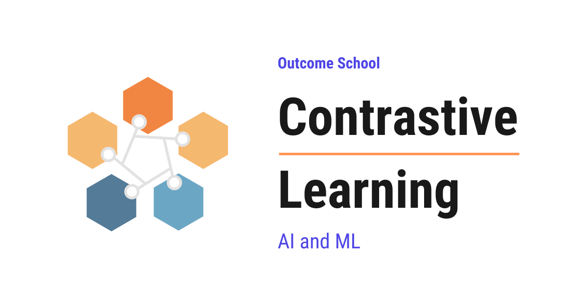
Contrastive Learning is a way of teaching a model by comparing things. The model learns to pull similar things close to each other and push different things far apart.
In this blog, we will learn about Contrastive Learning. We will also see how it works step-by-step and where it is used in the real world.
We will cover the following:
- What is Contrastive Learning?
- Why do we need Contrastive Learning?
- The key idea behind Contrastive Learning.
- Positive pairs and Negative pairs.
- How does Contrastive Learning work step-by-step?
- Loss functions used in Contrastive Learning.
- Popular Contrastive Learning methods.
- Real-world use cases of Contrastive Learning.
Let's get started.
What is Contrastive Learning?
Contrastive Learning is a way of teaching a model to learn good representations of data by comparing things. The model learns to pull similar things close to each other and push dissimilar things far apart in a representation space.
In simple words, Contrastive Learning = Contrast + Learning. We learn by contrasting one thing with another.
Let's say we have two photos of the same cat, taken from different angles. These two photos are similar. They should be close to each other in the representation space. Now, consider a photo of a car. This is very different from the cat photos. It should be far away from them.
This is the core idea of Contrastive Learning.
Similar things attract each other and stick together. Dissimilar things repel each other and move apart. Contrastive Learning teaches the model to behave like these magnets.
Why do we need Contrastive Learning?
Before jumping into how it works, we must understand the problem it solves.
In traditional supervised learning, we need labeled data. For every image, we need a human to tell us "this is a cat", "this is a dog", and so on. Labeling data is expensive. It is slow. It needs a lot of human effort.
But, here is the catch. The internet has billions of images, videos, and pieces of text. Only a very small fraction of this data is labeled. We have huge amounts of unlabeled data available, but we cannot use it directly with supervised learning.
So, here comes Contrastive Learning to the rescue.
Contrastive Learning does not need any labels from humans. It is a self-supervised learning technique. The model creates its own labels from the data itself. This way, we can train the model on massive amounts of unlabeled data and still learn very useful representations.
Once these representations are learned, we can reuse them for many downstream tasks like classification, search, clustering, and etc., with very little labeled data.
This is the beauty of Contrastive Learning.
The key idea behind Contrastive Learning
We want the model to learn a function that maps each input (an image, a sentence, a video, and etc.) to a vector. This vector is called the embedding or the representation. The space where all these vectors live is called the embedding space.
In this embedding space:
- Similar inputs should have embeddings that are close to each other.
- Dissimilar inputs should have embeddings that are far apart from each other.
If the model can do this well, then the embeddings become very useful. We can use them for many tasks like search, classification, recommendation, and etc.
This is the goal of Contrastive Learning.
Positive pairs and Negative pairs
Now, the question is: how does the model know which things are similar and which things are different, without any labels?
The answer is: we create pairs from the data itself.
Positive pair: Two samples that are similar and should be close in the embedding space.
Negative pair: Two samples that are different and should be far apart in the embedding space.
Let's see how we create these pairs for images.
We take an image. We apply some changes to it, such as cropping, rotating, flipping, or changing the colors. These changes are called data augmentation. The two augmented versions of the same image form a positive pair, because they come from the same original image.
Now, we take any other image from the dataset. This image and the first image form a negative pair, because they are different images.
This way, we get positive pairs and negative pairs without any human labels.
The choice of augmentation is very important. The augmentations should change the look of the image but not its meaning. For example, a cropped cat is still a cat. A rotated cat is still a cat. So, the model learns that these surface-level changes do not matter, and it focuses on the actual content of the image.
For text, a positive pair can be two sentences that mean the same thing. For an image-text model, a positive pair can be an image and its caption.
Search models are trained on the same shape of data, where the query is paired with a passage that answers it as the positive and one that does not as the negative. We have a detailed blog on Decoding ColBERT that walks through this training setup with real numbers.
How does Contrastive Learning work step-by-step?
The best way to learn this is by taking an example.
Let's say we have an image of a cat. We will follow these steps:
Step 1: We take the cat image and create two different augmented versions of it. Let's call them View 1 and View 2. View 1 and View 2 form a positive pair.
Step 2: We take another image from the dataset, let's say an image of a car. This image is a negative sample.
Step 3: We pass View 1, View 2, and the car image through a neural network. The neural network gives us three embedding vectors.
Step 4: We compute the similarity between every pair of embeddings. A common way to measure similarity is the cosine similarity, which tells us how close two vectors are in direction. The cosine similarity gives a value between -1 and 1. A value close to 1 means the two vectors are very similar. A value close to -1 means they are very different.
For the sake of understanding, let's assume after a fresh start, the model gives these similarity scores:
- Similarity(View 1, View 2) = 0.3
- Similarity(View 1, Car) = 0.6
- Similarity(View 2, Car) = 0.5
Here, we can see that the model is confused. It thinks the two cat views are less similar to each other than they are to the car. This is wrong. So, the loss will be high, and the model will update its weights.
Step 5: We train the model to make the similarity between View 1 and View 2 high, and the similarity between View 1 and the car image low, and the similarity between View 2 and the car image low.
After training for many rounds, we want the scores to look more like this:
- Similarity(View 1, View 2) = 0.9
- Similarity(View 1, Car) = 0.1
- Similarity(View 2, Car) = 0.1
Step 6: We repeat this process for many images, many times, until the model learns good embeddings.
This is how the model learns without any labels.
This was all about the high-level process. Now, the next big question is: how exactly do we tell the model that its current similarity scores are wrong, and by how much? This is where the loss function comes into the picture.
Loss functions used in Contrastive Learning
To train the model, we need a loss function. The loss function tells the model how well it is doing. The model updates its weights to reduce the loss.
There are a few popular loss functions used in Contrastive Learning. Let's see each one.
Contrastive Loss
Contrastive Loss works on 2 samples at a time (a pair).
This is the simplest one. We give the model a pair of samples and tell it whether they are similar or different.
- If they are similar, the loss is small when their embeddings are close and large when their embeddings are far apart.
- If they are different, the loss is small when their embeddings are far apart (beyond a fixed margin) and large when their embeddings are close.
For the sake of understanding, let's say the margin is 1.0. If two different images have an embedding distance of 0.2, the loss will be high because they are too close. The model will push them apart. If their distance becomes 1.5, the loss for this pair becomes zero, because they are already far enough apart.
The model learns to pull similar pairs together and push dissimilar pairs apart by at least the margin.
Triplet Loss
Triplet Loss works on 3 samples at a time (a triplet).
The three samples are:
- Anchor: the reference sample.
- Positive: a sample similar to the anchor.
- Negative: a sample different from the anchor.
The loss pushes the anchor closer to the positive than to the negative by at least a fixed margin. In simple words, the distance between the anchor and the positive must be smaller than the distance between the anchor and the negative, by some safety gap.
For the sake of understanding, let's say the anchor is a photo of person A, the positive is another photo of the same person A, and the negative is a photo of person B. The triplet loss will pull the two photos of person A together and push the photo of person B away from them. This is exactly what we want in face recognition.
InfoNCE Loss
InfoNCE Loss works on 1 anchor with 1 positive and many negative samples at a time.
This is the most popular one in modern Contrastive Learning. It is used in methods like SimCLR and CLIP.
The model has to pick the positive sample out of all the samples. It is like a classification problem where the correct answer is the positive sample, and all the others are wrong answers.
The model learns to give a high similarity score to the positive sample and low similarity scores to the negative samples.
Note: InfoNCE also uses a small number called the temperature, which controls how sharp the model's decisions are. A small temperature makes the model very confident, while a large temperature makes it softer. The right temperature is important for good training.
Popular Contrastive Learning methods
Now that we have learned the basics, it's time to learn about some popular Contrastive Learning methods.
SimCLR
SimCLR stands for Simple Framework for Contrastive Learning of Visual Representations. It was introduced by Google.
The idea is very simple:
- Take an image, create two augmented versions of it. One version is treated as the anchor, and the other as the positive.
- Pass both versions through the same neural network to get embeddings.
- The negative samples are simply the augmented versions of the other images in the same batch.
- Use the InfoNCE loss to bring the anchor and the positive close together, and push the anchor away from all the negatives.
SimCLR showed that simple data augmentation is enough to learn very powerful image representations, without any labels.
MoCo (Momentum Contrast)
SimCLR needs a large batch size to have enough negative samples. This is a problem because large batches need a lot of GPU memory.
So, here comes MoCo to the rescue.
MoCo maintains a dynamic dictionary of negative samples as a queue. Every new mini-batch is added to the queue, and the oldest mini-batch is removed. This way, we can have many negative samples without needing a very large batch size. MoCo also uses a slowly updated copy of the model, called the momentum encoder, to compute the embeddings for the queue. This keeps the embeddings in the queue fresh and makes the training stable.
CLIP (Contrastive Language-Image Pre-training)
CLIP is from OpenAI. It learns by matching images with their text captions.
Here, the positive pair is an image and its correct caption. The negative pairs are the image and the captions of other images in the same batch.
CLIP is trained on millions of image-text pairs from the internet. After training, CLIP can do amazing things. For example, we can give CLIP a new image of a puppy and a list of labels like "a photo of a cat", "a photo of a dog", "a photo of a bird". CLIP will compute the similarity between the image and each label, and pick the one with the highest similarity, which will be "a photo of a dog". CLIP can do this without being trained on that specific task. This is called zero-shot classification.
In 2023, Google introduced SigLIP, which replaces CLIP's softmax loss with a simpler pairwise sigmoid loss. This makes training more memory-efficient and allows much larger batch sizes. SigLIP is now the vision encoder of choice in many modern vision-language models.
CLIP is now used as a building block in many famous models like Stable Diffusion and DALL-E.
Non-contrastive methods
More recent methods like BYOL, SimSiam, and DINO drop negative pairs entirely. They learn good representations using only positive pairs, with the help of architectural tricks (different methods use different combinations of stop-gradient, momentum encoders, predictor heads, and output centering) to avoid collapsing all inputs to the same embedding. These methods are sometimes called non-contrastive self-supervised learning. DINO and its successor DINOv2 from Meta are the current go-to choice for self-supervised visual representation learning. A closely related idea is the Joint Embedding Predictive Architecture (JEPA) from Yann LeCun's team, which drops negative pairs by predicting the summary of a hidden part of the input from the visible part, instead of comparing pairs at all.
Real-world use cases of Contrastive Learning
Now, let's see where Contrastive Learning is used in the real world.
- Image search: Finding images that look similar to a given image.
- Face recognition: Bringing different photos of the same person close together and photos of different people far apart in the embedding space.
- Recommendation systems: Products that users often buy together are pulled close, and unrelated products are pushed apart. This helps in recommending similar products.
- Text similarity: Finding sentences or documents with similar meaning, useful in search engines and chatbots.
- Multimodal models: CLIP-style models that connect images with text. These are used inside image generation models like Stable Diffusion and DALL-E.
- Medical imaging: Learning useful representations from large amounts of unlabeled medical images, where labeled data is very hard to get.
- Audio and speech: Learning representations of sounds and speech without labels.
In many of these use cases, once the embeddings are learned, the next step is to quickly find the most similar ones in a huge collection. We have a detailed blog on Approximate Nearest Neighbor (ANN) Search that explains how that fast search works.
This is how Contrastive Learning helps in solving many real-world problems in a very simple way.
Now, we have understood Contrastive Learning.
Frequently Asked Questions
Is Contrastive Learning supervised or unsupervised?
Contrastive Learning is a self-supervised learning technique. It does not need any labels from humans, because the model creates its own labels from the data itself. For example, two augmented versions of the same image form a positive pair, and any other image forms a negative pair.
Do all self-supervised methods need negative pairs?
No. Methods like BYOL, SimSiam, and DINO drop negative pairs entirely and learn using only positive pairs. They use architectural tricks such as stop-gradient, momentum encoders, predictor heads, and output centering to avoid collapsing all inputs to the same embedding. These are called non-contrastive methods.
What is the difference between SimCLR and MoCo?
SimCLR takes its negative samples from the other images in the same batch, so it needs a large batch size and a lot of GPU memory. MoCo keeps a queue of negative samples, adding each new mini-batch and removing the oldest one. It also uses a slowly updated momentum encoder to keep training stable.
What is the difference between Contrastive Loss and Triplet Loss?
Contrastive Loss works on 2 samples at a time and is told whether the pair is similar or different. Triplet Loss works on 3 samples, an anchor, a positive, and a negative. It pushes the anchor closer to the positive than to the negative by at least a fixed margin.
How does CLIP classify images it was never trained on?
CLIP computes the similarity between the new image and each text label, like "a photo of a cat" or "a photo of a dog". It then picks the label with the highest similarity. This is called zero-shot classification, because CLIP was not trained on that specific task.